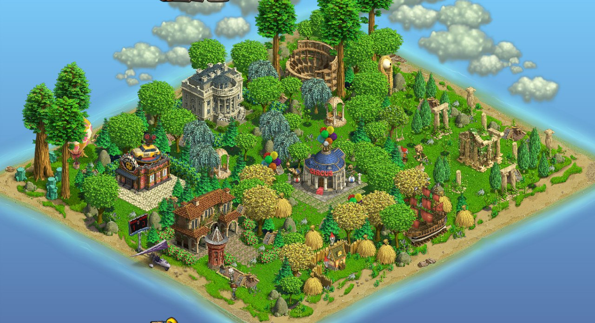

Получено: файл; исходный URL. Сопоставление предварительное: в обеих публикациях остров Солнечный и Терем при засухе, но условия срока доступа различаются; версия или редакция могут отличаться. Страница ссылается на файл zombicity.info по тому же пути; скачана копия moy.su, побайтовая идентичность не проверена. Страница: источник.

Солнечный остров
браузерная социальная версия; сеть не уточнена- Тип
- Острова
- Версия и дата
- браузерная социальная версия; сеть не уточнена
Данные по источнику · браузерная социальная версия; сеть не уточнена · 04.04.2015 — дата фанатской копии
Предварительно: Фанатский источник; возможное копирование и изменения после публикации не исключены. Неподписанные иконки определены предварительно по именам файлов.. Требуется сверка.
- Доступ
- По анонсу, летать можно 30 дней с момента первого прибытия, но оставаться на острове можно и после этого; автор предупреждает не забыть рабочих.
- Событие
- Линейка помощи гномам при засухе; детали водного канала создаются в Тереме; возможная награда — Золотая Фемида.
- Дата
- Публикация фан-сайта имеет апрельскую дату, хотя говорит о летней акции; дата оригинального события отдельно не установлена.
Данные по источнику · социальная браузерная версия; сеть не указана · 2015-04-04 — дата публикации копии; не обязательно дата события
Предварительно: Фанатская публикация, возможно перепечатана. Даты и действующие условия необходимо проверить.. Требуется сверка.
- Анонс «Засуха»
- По заметке, летать на остров можно в течение 30 дней после первого прибытия; оставаться на нём можно без указанного ограничения. Источник советует не забыть работников до окончания срока перелётов.
- Водный канал
- Детали канала производятся в Тереме на Солнечном острове; за преодоление трудностей обещана Золотая Фемида. Конкретные рецепты и условия получения не указаны.
- Даты
- Страница датирована апрелем 2015 года, но текст говорит о летней квестовой линейке; дата копии сама по себе не устанавливает дату события.
Связанные сущности
- Дельтаплан — Солнечный остров — связана с локацией
- Башня — Солнечный остров — связана с локацией
- Терем — Солнечный остров — связана с локацией
- Мостик 1 — Солнечный остров — связана с локацией
- Мостик 2 — Солнечный остров — связана с локацией
- Путешествие — «Засуха» — связанная локация
- Чистка территории — «Засуха» — связанная локация
- Древние мастера — «Засуха» — связанная локация
- Помощь гномов — «Засуха» — связанная локация
- Фонтан молодости — «Засуха» — связанная локация
- Довольные гномы — «Засуха» — связанная локация